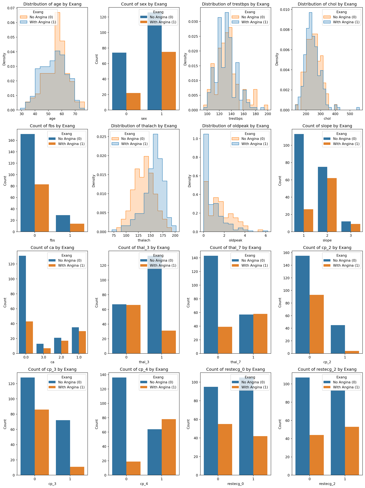
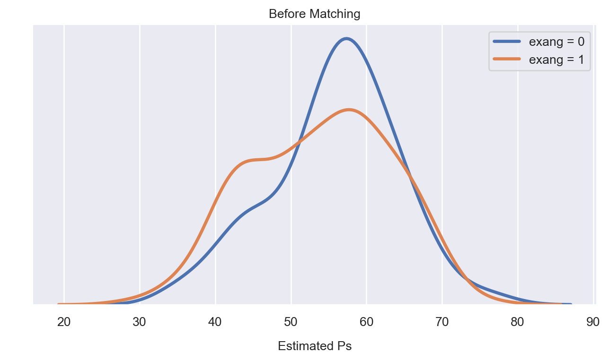

import pandas as pd
import pandas as pd
import numpy as np
url = "https://archive.ics.uci.edu/ml/machine-learning-databases/heart-disease/processed.cleveland.data"
# Column names based on the dataset documentation
column_names = ['age', 'sex', 'cp', 'trestbps', 'chol', 'fbs', 'restecg',
'thalach', 'exang', 'oldpeak', 'slope', 'ca', 'thal', 'num']
# Load the dataset
df = pd.read_csv(url, names=column_names)
# Replace '?' with NaN
df.replace('?', np.nan, inplace=True)
# Option to drop rows with NaN
df.dropna(inplace=True)Propensity Score Matching in Python
programming
A step-by-step approach to conducting propensity score matching in Python
under construction !!!
Introduction
In statistical analysis, the challenge of comparing treatments in observational studies is significant due to the presence of confounding variables. Unlike randomized controlled trials (RCTs), observational studies do not randomly assign treatments, which can lead to biased estimates of treatment effects. This is where the idea of propensity score matching (PSM) becomes an invaluable tool.
PSM is a statistical technique that attempts to estimate the effect of a treatment or intervention by accounting for the covariates that predict receiving the treatment (or intervention). It was developed by Rosenbaum and Rubin (1983) to help reduce bias by matching units receiving the treatment with similar units that do not receive the treatment based on propensity scores. This score is the probability of treatment assignment conditional on observed baseline characteristics. PSM helps to form a sample in which the distribution of observed baseline covariates is similar between treated and untreated groups, thereby mimicking a randomized experiment.
In this blog post, I will explore the implementation of PSM in Python using the Cleveland heart disease datasets from the UCI repository (Janosi and Detrano 1988). This guide will detail the necessary packages, provide step-by-step coding examples, and offer practical advice to optimize your analysis. This post is designed for researchers, statisticians, and data enthusiasts who want to improve their skills in using PSM with observational data, especially when employing Python for their analyses.
Let’s get started by exploring and preparing the dataset.
Dataset Variable Descriptions
Dataset Variable Descriptions
age: Age of the patient.sex: Sex of the patient (1 = male; 0 = female).cp: Chest pain type with the following categories:- 1: typical angina
- 2: atypical angina
- 3: non-anginal pain
- 4: asymptomatic
trestbps: Resting blood pressure (in mm Hg on admission to the hospital).chol: Serum cholesterol in mg/dl.fbs: Fasting blood sugar > 120 mg/dl (1 = true; 0 = false).restecg: Resting electrocardiographic results (Values 0, 1, 2).thalach: Maximum heart rate achieved.exang: Exercise-induced angina (1 = yes; 0 = no).oldpeak: ST depression induced by exercise relative to rest.slope: The slope of the peak exercise ST segment.ca: Number of major vessels (0-3) colored by fluoroscopy.thal: A short form for thalassemia (3 = normal; 6 = fixed defect; 7 = reversible defect).num(the predicted attribute): Diagnosis of heart disease (angiographic disease status) —- Value 0: < 50% diameter narrowing
- Values 1-4: > 50% diameter narrowing
exang (Exercise Induced Angina): This variable is binary (1 = yes, 0 = no) and indicates whether the patient experienced angina (chest pain) induced by exercise. It is a good candidate for a treatment variable because angina can be considered as an “event” or “condition” whose impact on other health outcomes can be assessed.
num (Diagnosis of Heart Disease): This is the outcome variable and is already coded as 0 = no presence and 1-4 indicating different types of defects (often, any value > 0 is considered as presence of disease). This variable can be used to determine the effect of exercise-induced angina on the presence of heart disease.
df['num'] = (df['num'] > 0).astype(int)
continuous_vars = ['age', 'trestbps', 'chol', 'thalach', 'oldpeak', 'ca']
# Converting all other variables to 'category' data type except the ones in continuous_vars
for column in df.columns:
if column not in continuous_vars:
# First converting to float to handle any decimal string representations
df[column] = df[column].astype('float').astype('int64').astype('category')
df = pd.get_dummies(df, columns=['thal', 'cp', 'restecg'])
df = df.drop(columns=['thal_6', 'restecg_1', 'cp_1'])
# List of columns that contain boolean values
bool_columns = ['thal_3', 'thal_7', 'cp_2', 'cp_3', 'cp_4', 'restecg_0', 'restecg_2']
# Converting boolean values to integers (1 for True, 0 for False)
for column in bool_columns:
df[column] = df[column].astype(int).astype('category')Distribution of the Variables with respect to Exang
import seaborn as sns
import matplotlib.pyplot as plt
# Filtering out the 'num' and 'exang' columns from plotting
plot_columns = df.columns[~df.columns.isin(['num', 'exang'])]
# Determine the number of subplots
n_vars = plot_columns.size
n_cols = 4
n_rows = (n_vars + n_cols - 1) // n_cols # This ensures enough rows to accommodate all plots
# Create a figure to hold the subplots
fig, axes = plt.subplots(n_rows, n_cols, figsize=(15, 5 * n_rows))
axes = axes.flatten() # Flatten the axes array for easy iteration
# Iterate through the list of columns and create plots
for i, column in enumerate(plot_columns):
ax = axes[i]
if df[column].dtype in ['int64', 'float64']: # Adjust based on your specific data types
sns.histplot(data=df, x=column, hue='exang', element='step', stat='density', common_norm=False, ax=ax)
ax.set_title(f'Distribution of {column} by Exang')
ax.set_xlabel(column)
ax.set_ylabel('Density')
ax.legend(title='Exang', labels=['No Angina (0)', 'With Angina (1)'], loc='best')
else:
sns.countplot(x=column, hue='exang', data=df, ax=ax)
ax.set_title(f'Count of {column} by Exang')
ax.set_xlabel(column)
ax.set_ylabel('Count')
ax.legend(title='Exang', labels=['No Angina (0)', 'With Angina (1)'], loc='best')
# Adjust layout to prevent overlap and ensure labels are readable
plt.tight_layout()
plt.show()
Propensity Score Estimation
In the PSM implementation, I will use the psmpy package developed by Kline and Luo (2022)
from psmpy import PsmPy
from psmpy.functions import cohenD
from psmpy.plotting import *
import matplotlib.pyplot as plt
import seaborn as sns
import warnings
warnings.filterwarnings('ignore')
import mathimport researchpy as rp
# rp.summary_cat(df['num'])
import warnings
warnings.filterwarnings('ignore')
import matplotlib.pyplot as plt
import seaborn as sns
covariate = 'age'
data = df
pepe_calories = data[data['exang'] == 1][covariate]
modern_calories = data[data['exang'] == 0][covariate]
plt.figure(figsize=(8,4))
ax = sns.distplot(pepe_calories, fit_kws={"color":"'orange'"}, kde=True,#palette=["#3498db",'orange']
hist=None, label="exang = 0", kde_kws={"linewidth": 2.5});
ax = sns.distplot(modern_calories, fit_kws={"color":"#3498db"}, kde=True,
hist=None, label="exang = 1", kde_kws={"linewidth": 2.5});
plt.xlabel('Propensity Score')
plt.legend(fontsize=10)
plt.xticks(fontsize=10)
plt.yticks(fontsize=10)
plt.xlabel('Estimated Ps', fontsize=10, labelpad=10)
plt.ylabel(' ', fontsize=10, labelpad=10)
ax.spines['right'].set_visible(False)
ax.spines['top'].set_visible(False)
ax.spines['left'].set_visible(False)
plt.yticks([])
plt.title('Before Matching', fontsize=10)
plt.show()
Thesis
Causal inference is a vital aspect of medical research that helps to establish causal relationships between different variables. It is the process of making claims about cause-and-effect relationships in a given system or phenomenon. It is an essential component of scientific research, particularly in fields such as medicine, economics, and social sciences, where experiments that manipulate variables are often not feasible or ethical. In these cases, researchers often rely on comparative experimental studies.
Observational studies become important in fields such as medicine, economics, and social sciences where it may not be feasible or ethical to conduct experiments that manipulate variables. However, making causal inferences in observational studies can be challenging due to limitations such as random selection of subjects but not random allocation of treatments to subjects. This makes it difficult to determine whether the difference in outcome between treated and untreated subjects is due to the treatment or differences in other characteristics of the subjects.
Another limitation is self-selection, where individuals opt for a particular treatment for specific reasons, making it difficult to compare them directly with those who did not receive the treatment.
There is an increasing interest in estimating the causal effects of treatment using observational or nonrandomized data. In observational studies, the baseline characteristics of treated or exposed subjects often differ systematically from those of untreated or unexposed subjects. Essential to the production of high-quality evidence to inform decision-making is the ability to minimize the effect of confounding. An increasingly frequent approach to minimizing bias when estimating causal treatment effects is based on the propensity score (the likelihood of receiving treatment based on some outlines subject characteristics) usually obtained using a logit model Rosenbaum and Rubin (1983).
Propensity score matching have gained much relevance across disciplines to estimate causal effects using observational data. This technique attempt to replicate the ideal of randomized experiments as closely as possible. It a quasi-experimental method that aims to search for counterfactual unit that is comparable with the treated unit among many untreated units.
References
Janosi, Steinbrunn, Andras, and Robert Detrano. 1988. “Heart Disease.” UCI Machine Learning Repository. https://doi.org/10.24432/C52P4X.
Kline, Adrienne, and Yuan Luo. 2022. “PsmPy: A Package for Retrospective Cohort Matching in Python.” In 2022 44th Annual International Conference of the IEEE Engineering in Medicine & Biology Society (EMBC), 1354–57. IEEE. https://doi.org/10.1109/EMBC48229.2022.9871333.
Rosenbaum, Paul R, and Donald B Rubin. 1983. “The Central Role of the Propensity Score in Observational Studies for Causal Effects.” Biometrika 70 (1): 41–55. https://doi.org/10.2307/2335942.